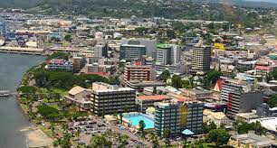

Suva is the biggest city in Fiji, and there is 77,366 people in it.
Places to GO! Mamanuca and Yasawa Islands
This two island have wonderful beach, and you can diving, you can hiking and enjoy the fantastic sun set in evening.
It uses utility classes for typography and spacing to space content out within the larger container.